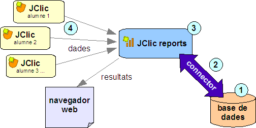

|
Servidor d'informes JClic
El JClic disposa d'un sistema de registre dels resultats de les activitats. El JClic reports és el mòdul encarregat de recollir les dades (temps emprat en cada activitat, intents, encerts, etc...) i presentar-les després en informes estadístics de diversos tipus.
Funcionament
El JClic reports es basa en un esquema client
- servidor. El servidor pot ser qualsevol ordinador de la xarxa, i els clients són de dos tipus: les aplicacions JClic (applet i player),
que envien al servidor les puntuacions obtingudes pels usuaris en fer
les activitats, i els navegadors web (Firefox, Opera,
Explorer...) des dels quals es poden consultar els resultats i administrar
la base de dades.
Per posar en funcionament el
servidor necessitareu tres elements:
- Un sistema de bases
de dades, on s'emmagatzemarà� la informació. Ha de suportar
transaccions SQL i disposar d'algun connector JDBC o ODBC. Hi ha molts sistemes, tant comercials com
lliures, que compleixen aquests requisits: mySQL,
MS-Access, PostgreSQL, Oracle, etc.
- Un connector que permeti la
comunicació entre la base de dades i el programa JClic
reports. Els connectors
emprats per les aplicacions Java són de tipus JDBC, tot i que
també es poden emprar connectors ODBC.
- El programa JClic
reports, que fa dues funcions:
- D'una banda ofereix
als clients JClic la informació necessària per a identificar
els usuaris, iniciar les sessions de treball i rebre els
resultats: nom de l'activitat,
nombre d'intents i d'encerts, temps emprat, etc.
El JClic reports emmagatzema aquesta informació a la base de dades mitjançant el connector.
- La segona
funció consisteix a processar les dades emmagatzemades i
mostrar-les en diversos formats. Aquesta consulta es pot realitzar
des de qualsevol navegador web: Firefox, Safari, Internet Explorer,
etc.
En aquest esquema es mostren els diversos elements
del sistema i les seves interaccions:

Modalitats
La comunicació entre el JClic reports i els
seus clients (JClic applet, JClic player, navegador web, etc.) es
pot establir de dues maneres:
- Per connexió directa (modalitat estàndard)
En aquesta modalitat el JClic reports obre una finestra al servidor on es mostra
informació del que està fent, i ofereix uns botons
per aturar-lo, engegar-lo i consultar els resultats des d'un navegador.
- Mitjançant un servidor d'aplicacions
Java (modalitat
avançada)
Aquesta modalitat no requereix disposar d'entorn gràfic. El
JClic reports actua com un conjunt de servlets integrats
en un servidor d'aplicacions J2EE.
Configuració del sistema
Per configurar el sistema d'informes del JClic
haurem de seguir quatre passos, que afecten els quatre elements que
es mostren numerats a l'esquema:
- Crear una base de dades.
- Configurar el connector.
- Configurar el servidor d'informes JClic reports.
- Configurar els clients JClic per tal que
facin ús del servidor d'informes.
Els passos a seguir per a realitzar aquestes operacions seran diferents segons el tipus
de base de dades i entorn operatiu. En aquestes guies s'explica detalladament el procés en diverses situacions:
Modalitat estàndard
Modalitat avançada
Documentació addicional
Aquests són alguns documents i fitxers que us poden
resultar d'interès
per configurar la base de dades i realitzar el manteniment del sistema:
|